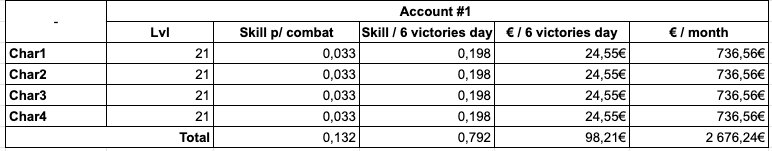
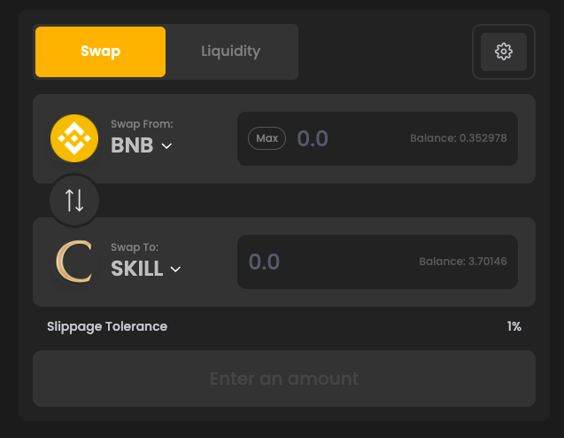
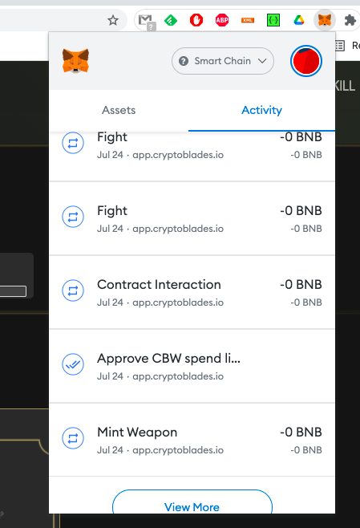
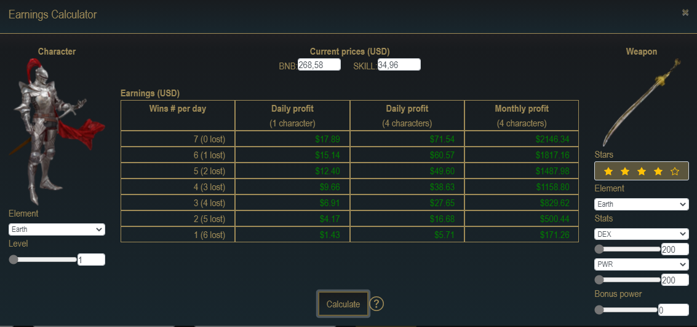
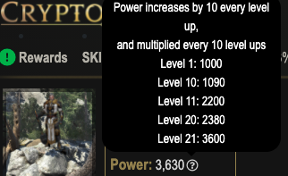
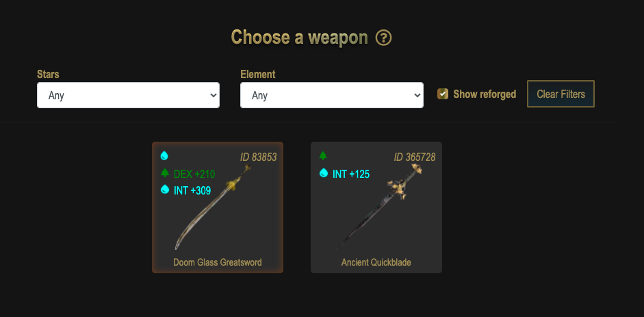
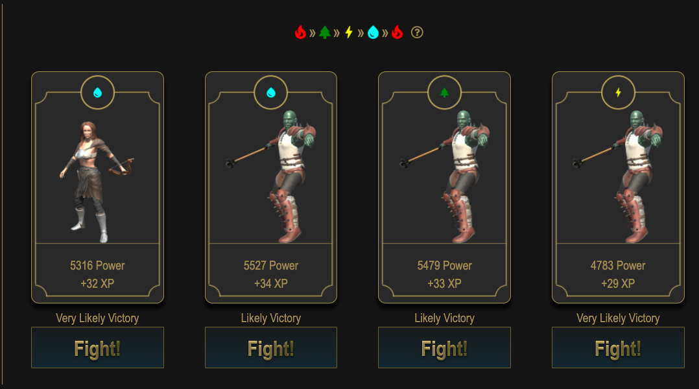
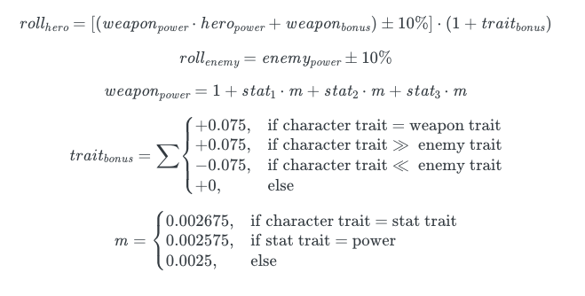
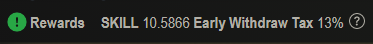

Para começar a jogar Cryptoblades, você pode escolher uma das seguintes estratégias de compra:
Baixo orçamento - Ótimo para começar. Se for a sua primeira vez no jogo, você pode recrutar um personagem + arma por algum Skill (os preços mudam a toda a hora). Se você já recrutou antes, o recrutamento só lhe dará um novo personagem.
Marketplace - Boa abordagem se você quiser economizar algum tempo, pois é possível comprar personagens já evoluídos no Marketplace. Poderá também comprar uma arma decente, sendo que no marketplace será sempre mais caro do que forjar, no entanto, aqui temos a garantia de ter uma arma boa ao passo que forjar traz uma arma aleatória.
Lembre-se de que sua arma e seu personagem devem ser do mesmo Elemento para se obter máxima eficiência em batalha (mais sobre isso adiante).
Setup com vários personagens - Considerando que você pode ter até 4 personagens por conta e 4 contas, você pode ter no máximo 16 personagens. Portanto, basta multiplicar o orçamento inicial acima pelo número de personagens que você deseja ter (e como todos os personagens podem usar a mesma arma não é necessário comprar 4 armas!).
Lembre-se ... quanto mais personagens você tiver, maior e mais rápido será o seu retorno.
Gastos Diários -
Uma média de USD$0,22 é gasta por batalha, até um máximo de 7 batalhas por dia/personagem, o que significa um gasto diário de
USD$1,54 para um caractere ou USD$6,16 para 4 caracteres, por dia e assim por diante. Estes custos de gás são automaticamente pagos em BNB via wallet.
Cada personagem tem no máximo 200 stamina, e para fazer uma batalha é necessário consumir 40 stamina. A stamina
recupera a uma taxa de 1 ponto a cada 5 minutos, o que significa que a cada 3h20m é possível lutar novamente.
Abaixo temos um cenário de simulação de potenciais ganhos mensais, para 1 conta com 4 personagens:

Fig.1 - Exemplo de retorno previsto para 1 conta com 4 personagens.
Para jogar Cryptoblades você ira precisar de alguns tokens de Skill para gastar no jogo, e esses tokens podem ser comprados com BNB.
Para isso, basta seguir estas etapas:
Crie a sua conta na Metamask e instale a respetiva extensão no browser.
As carteiras Metamask, por predefinição, estão configuradas para a rede Ethereum, portanto, é necessário configurá-las para aceitarem também tokens BEP-20 (Binance). Para fazer isso, basta seguir
estas instruções.
O resultado final deverá mostrar algo como isto:
Fig.2 - Binance Smart Chain corretamente configurada e disponível na Metamask.
Crie uma conta Binance, adquira algum BNB ao fazer a troca do FIAT que depositou (ou troque por outra criptomoeda, como preferir) e retire a quantia que deseja para a sua carteira Metamask. Certifique-se de que copia o seu endereço corretamente!
Fig.3 - Aqui é possível conferir e copiar o endereço da wallet no Metamask.
Caso utilize a Metamask como wallet dos tokens, é possível fazer Swap diretamente no aplicativo.
A alternativa passa por fazer a troca na Swap | ApeSwap (que é uma Decentralized Exchange, ou DEX)
por BNB para o que valor pretendido (e.g. fazer a troca de 2 BNB para 7 Skill).
Por exemplo, se você tem 2 BNB em sua carteira, troque cerca de 1,8 para $ Skill e deixe 0,2 BNB, o que deve ser suficiente para cerca de 2 semanas de jogo (para 1 conta com 4 personagens).

Fig.4 - Ecrã de troca (swap) de BNB por Skill.
É muito importante ter em consideração que cada ação dentro do jogo (comprar personagem, vender arma, lutar, etc.) é uma transação no blockchain Binance, o que significa que é necessário deixar uma quantia de BNB na sua carteira Metamask para pagar as gas fees associadas, que são em média de USD$0,22 / transação.

Fig.5 - Exemplo de uma lista de transacções.
Dica do amigo - antes de aprovar a sua transacção na BSC, altere o Gas Limit para 200000. Isto vai fazer com que pague metade do gas fee!
Fig.6 - Não se esqueça de alterar o Gas Limit para poupar algum dinheiro!
É possível ter 4 personagens por conta no Metamask, até um máximo de 4 contas por carteira Metamask. Isso torna possível ter 16 personagens no jogo (4 personagens em cada 4 contas).
Fig.7 - No ícone superior direito do ecrã principal da Metamask é possível consultar as contas existentes e criar novas contas.
Oh não! Acabei de fazer troca de BNB por Skill mas não vejo os novos tokens na minha carteira...e agora?
Calma, ainda falta adicionar o token da Cryptoblades através da opção "Add Token", na Metamask, através do contract id.
Depois de ter Skill suficiente na sua carteira virtual, você pode começar a jogar Cryptoblades.
Assim que entrar no jogo, terá a opção de criar um personagem por algum valor Skill, e caso seja a sua primeira vez no jogo, irá receber o bónus de alguma campanha promocional disponível (por exemplo, poderá receber $30 em Skill para compras in-game, 5 Skill, etc ...). As promoções do jogo são pagas em saldo in-game, que só pode ser usado para forjar armas ou recrutar novos personagens.
Outra alternativa é comprar diretamente no Marketplace (considerar isto com sendo uma compra de ativo de segunda mão). Uma maneira de otimizar os seus custos é criar o primeiro personagem no menu Plaza para ganhar seu saldo promocional no jogo e comprar quaisquer outros ativos diretamente do Marketplace. Certifique-se de que os seus personagens e armas são todos do mesmo elemento ... vamos falar em detalhe disso mais adiante.
Existem 4 elementos no jogo: Água, Terra, Fogo e Elétrico. Cada elemento tem uma vantagem sobre o outro, conforme mostrado na imagem abaixo:
Fig.12 - Como cada elemento tem vantagem sobre outro.
Se você escolher todos os personagens do mesmo elemento, poderá usar a mesma arma para todos, otimizando assim as suas chances de ganhar batalhas e seu custo / retorno. Quanto mais personagens você tiver, maior será o seu retorno. Abaixo está um exemplo da diferença entre ter 1 personagem ou 4 personagens por dia no nível 1 com uma arma de 4 estrelas, considerando a cotação de $ Skill de $ 34,96.

Fig.13 - O simulador oficial do jogo para cálculo de ganhos.
Cada personagem e arma é um NFT, portanto, ao verificar a sua carteira verá que existe um token com o nome CBC ou CBW. Se você tiver 4 personagens, irão aparecer 4 CBC. Se vender qualquer um dos seus personagens, os seus tokens CBC diminuem em 1 e o valor pelo qual foi vendido reverte para sua carteira como token Skill.
É possível verificar a escada de níveis e XP aqui.
Para evitar custos desnecessários, recomendo fazer o CLAIM de XP apenas quando os personagens tiverem XP suficiente para subir do nível 1 para 11, 11 para 21, 21 para 31, etc, porque apenas a cada 10 níveis seu poder aumenta em 1000, e cada 1000 de poder significa um bónus extra por vitória na batalha. Basta clicar no nome do seu personagem conforme mostrado abaixo para CLAIM XP para todos os personagens ao mesmo tempo. Novamente, para otimizar os gastos, certifique-se de que todos os personagens tenham XP suficiente para subir de nível para o próximo nível +10.
Fig.14 - A barra de XP, onde poderá subir de nível os seus personagens. Lembre-se de que fazer CLAIM do seu XP aumentará o nível de todos os personagens!

Fig.15 - Power de cada personagem.
O poder do seu inimigo será dimensionado de acordo com o seu poder + arma. Ao fazer CLAIM da XP e subir de nível, o seu personagem ficará mais forte, mas os seus inimigos também. O mesmo se aplica se você comprar uma arma melhor.
Quando fizer uma batalha, você irá escolher o seu personagem e a sua arma. Depois, serão apresentados 4 inimigos com poder e elemento aleatórios. A XP que cada combate dá varia entre 28 e 34, dependendo da dificuldade da luta.

Fig.16 - Escolha a arma com que vai lutar. Lembre-se de juntar armas e personagens do mesmo elemento!

Fig.17 - Hora da porrada!!
Cada batalha é uma transação na BSC, com um custo médio do gás de US$0,22. A gas fee é constante, independentemente do resultado da batalha, então você irá sempre gastar $0,22, quer ganhe ou não. É mais lucrativo escolher sempre as batalhas com maior chance de vitória e não necessariamente aquelas com maior retorno de XP.
Utilize este simulador para ter uma ideia da estimativa de percentagem de vitória ou derrota de cada batalha. Se a sua arma não tiver Weapon Bonus Power ou Stat 3 power, coloque o valor em 0.
Se os 4 inimigos gerados forem muito fortes ou você não tiver uma boa chance de vitória, espere até a próxima hora passar para que novos (e potencialmente mais acessíveis) inimigos sejam aleatoriamente gerados e listados (por exemplo, são 14h30, os 4 inimigos gerados colocam-me em combates que não me favorecem e a chance de ganhar é inferior a 90%. É só esperar até as 15h e 4 novos combates estarão disponíveis). É recomendável escolher batalhas com chance de vitória maior do que 90%, para maior lucratividade.
Para otimizar o seu poder de combate, o personagem e a arma devem ser do mesmo elemento. Se passar o cursor sobre a arma, verá as suas estatísticas completas.
No exemplo abaixo, vemos que o elemento é terra e tem atributos extras de DEX (terra) e STR (fogo). O seu poder de batalha aumentará se a arma em questão tiver qualquer um dos atributos que sejam o mesmo que o elemento da arma e do seu personagem.
Fig.18 - Exemplo para uma arma Terra de 4 estrelas.
O poder do seu inimigo terá um valor aleatório baseado em quanto poder o seu personagem tem, então se o seu personagem usar uma arma mais forte, o inimigo gerado será mais forte mas sua recompensa também será melhor.
O algoritmo que calcula o poder do seu personagem é basedo na seguinte formula:

Fig.19 - Este é algoritmo que determina a sua chance de vitória.
Por outras palavras, é muito importante que o par arma + personagem representem o mesmo elemento. Se um dos atributos da arma também for do mesmo elemento, será multiplicado por 1,07, caso contrário, será multiplicado por 1.
Para uma arma de 4 estrelas que possua 2 atributos, garanta que tem o mesmo atributo da arma com um valor o mais alto possível. Como a potência multiplica por 1,03 e qualquer elemento diferente do seu será multiplicado por 1, procure aquele com o maior valor e o melhor preço (por exemplo, 300 potência x 1,03 = 309 e 300 fogo x 1 = 300, então eles terão o mesmo impacto se o atributo de fogo for 309, para este exemplo).
A mesma fórmula aplica-se a armas de 3 estrelas e armas de 5 estrelas, que têm 1 e 3 atributos, respectivamente.
Para forjar uma arma, vá até ao menu Blacksmith e clique em Forge. O custo é de 0,22 Skill e qualquer arma de 1 a 5 estrelas pode vir com as seguintes probabilidades:
Fig.20 - Probabilidades de se obter uma arma.
Assim, você pode gastar dinheiro forjando a sua própria e tentar a sorte ou então ir ao Marketplace e comprar alguma arma mais cara, mas que seja adequada ao seu personagem.
Cada arma é um NFT, e ao abrir a sua carteira verá que tem um token chamado CBW. Se você tiver 4 armas, irão aparecer 4 CBW. Caso venda uma arma, ficará com 3 CBW e a quantia pela qual ela for vendida será revertida em Skill, na sua wallet.
Para saber se vale a pena ou não, terá de fazer algumas simulações usando a "Earnings Calculator" do jogo, que simula os ganhos no jogo utilizando uma arma de 3 estrelas, e compará-lo com o que você ganharia por uma 4 estrelas arma.
Fig.21 - Rendimento extra previsto para o próximo milestone level (que é a cada 10 níveis).
Abaixo é apresentada uma simulação, onde é possível verificar um lucro estimado de $144,27 caso todos os combates sejam ganhos.
Fig.22 - Exemplo de simulação combatendo com uma arma de 3 estrelas com o mesmo elemento e atributo extra do personagem (neste caso, INT).
Para saber se vale a pena comprar uma arma 4 estrelas, repita a simulação e veja quanto mais ficará a ganhar por dia.
Neste exemplo, temos um lucro estimado de $ 161,96, caso todas as partidas diárias sejam ganhas, o que levará a um aumento de $17,69 no lucro. Tenha em consideração, por exemplo, que uma arma de 4 estrelas custa em média 7 Skill, que na taxa de conversão atual seria em torno de $315,98, e que esse valor seria devolvido com ganhos em cerca de 17 dias. Porém, e dado que a quantidade de recompensa por batalha deve aumentar com as subidas de nível, o break-even poderá até chegar mais cedo do que o previsto.
Fig.23 - Mesma simulação para uma arma de 4 estrelas.
Para melhorar uma arma, é possível reforjar uma arma mais fraca para otimizar qualquer outra arma de sua preferência. Para isso, basta clicar na arma que deseja melhorar, clicar em Reforjar e escolher a arma que deseja destruir. A arma escolhida será destruída para que a arma de sua escolha receba um aumento de poder, que aparecerá em Bonus Power.
Cada arma tem até 100 pontos LB a serem adicionados para armas de 1 a 3 estrelas. Cada arma de 1 estrela e 2 estrelas que será destruída adiciona 1 LB, e uma arma de 3 estrelas adiciona 2 LB. Cada LB adiciona 15 pontos de poder à arma, até um total de 1500 bônus de poder. Uma arma de 4 estrelas, quando destruída para melhorar uma nova arma, pode render até 25 4LB, e cada 4LB adiciona 30 pontos até um total de 750 de poder de bônus. Uma arma de 5 estrelas, quando destruída para melhorar uma nova arma, pode render até 10 5LB, e cada 5LB adiciona 60 pontos até um total de 600 de bônus de poder.
O montante que você comprar em SKILL através do APESWAP vai ficar no Total Balance. Entretanto também temos os montantes SKILL IN GAME, que são os valores que pode ganhar fazendo o STAKE do valor que vai receber por cada batalha e do qual ainda não foi feito o CLAIM.
Fig.25 - O Balance total.
Para todas as batalhas que vencer, este montante de recompensa vai ser aumentado. Esse montante não pode ser utilizado para compra ou venda até ser feito o CLAIM do seu valor.

Fig.26 - Os ganhos por cada batalha estão visíveis na secção de Rewards.
Caso queira retirar esse montante, vai ter de pagar uma taxa inicial de 15%, que vai diminuindo 1% a cada dia. De forma a maximizar o retorno, deverá fazer levantamentos de 2 em 2 semanas, para não pagar taxa.
Uma outra alternativa é fazer o STAKE por 7 dias de algum desses montantes e receber 10% IN GAME SKILL, que fica disponível de imediato. O valor que colocar no STAKE não pode ser utilizado nesses 7 dias, e apenas poderá fazer STAKE do montante de Skill que tem em Rewards e não o que tem balance!
Fig.27 - A opção Staking.
Para isso basta selecionar a opção do meio “SKILL FOR SKILL” e depois colocar em “STAKE ALL OF UNCLAIMED REWARDS”
Fig.28 - Façam stake dos vossos ganhos e aproveitem os 10% disponibilizados de imediato!
A partir do primeiro STAKE vai ser contado os 7 dias de bloqueio. É aconselhável apenas fazer mais um STAKE no último dia da contagem para economizar gas fees (e.g. fiz o STAKE desses 10.58 SKILL agora, um contador de 7 dias vai começar. No dia seguinte tenho mais 4 SKILL para fazer CLAIM e quero ganhar +10% de SKILL IN GAME. Não é preciso fazer o STAKE neste momento, o melhor é juntar pelos próximos 6 dias e fazer mais um único aporte de STAKE de uma única vez. O relógio de contagem de 7 dias não vai ser zerado, é sempre 7 dias a partir do primeiro STAKE que foi feito).
Depois desses 7 dias, ao fazer UNSTAKE todo esse montante vai direto para seu BALANCE sem pagar nenhuma taxa.
A melhor forma de saber isso é indo ao Marketplace e procurando por armas que sejam parecidas com a sua, pois os valores vão ser alterados de acordo com oferta e demanda.
Para vender uma arma tens de ir ao mercado e clicar em List NFTs. Depois disso basta clicar na arma que queira vender e colocar o valor Ex: 3.50 (Não pode usar vírgula). Caso queira alterar o valor ou cancelar a venda, basta ir em Search NFTs e colocar o ID da sua arma (apenas o número). Caso não saiba o ID basta ir no BSCScan, colocar o seu endereço e por em CBW que vai ter todas as suas armas.
Sim, basta utilizar esse link e clicar no Connect to web3 para fazer a ligação com sua carteira.
Fig.29 - A interface web3.
Depois disso basta ir ao formulário 12 e colocar o endereço de quem está enviando o personagem, o endereço de quem vai receber, e por fim o ID do personagem que você quer enviar. Para funcionar, a carteira que vai estar conectada a esse site tem de ser a conta do personagem na Metamask. Importante ter em consideração que cada conta pode ter, no máximo, 4 personagens, logo, se for feito o envio de um personagem para uma conta que ja esteja cheia, esse NFT ficará perdido para sempre. Também ter em atenção se o personagem em questão não está bloqueado para transferência pelo período de 24 horas.
Para transferir arma o link é esse e o formulário é o 13 e é preciso pôr o seu endereço, o endereço de quem vai receber e o ID da arma. Também ter em atenção se a arma em questão não está bloqueada para transferência pelo período de 24 horas.
Normalmente esse erro ocorre quando a transação não é aprovada porque você escolheu valores demasiado baixos para as gas fees. Tente aumentar um pouco o Gas Limit para que a transação ocorra com sucesso!
Fig.31 - Mesmo com saldo suficiente, a transação pode falhar por causa de gas fees muito baixas.
Wallet - A wallet é um endereço online seguro onde todas as suas criptomoedas serão armazenadas. Para jogar Cryptoblades, precisará de ter em carteira BNB (a criptomoeda usada para pagar as gas fees na Binance Smart Chain) e de Skill (a moeda do jogo).
Fiat - Moeda emitida por governos centrais (e.g. Euro, USD, BRL, etc..)
Metamask - Ferramenta que permite aos utilizadores armazenar e gerenciar chaves de contas, transmitir transações, enviar e receber criptomoedas e tokens baseados em blockchain, assim como conectar-se com segurança a aplicativos descentralizados por meio de um browser compatível ou do browser integrado do aplicativo móvel.
Binance Smart Chain (BSC) - Implementação Blockchain da Binance, onde ocorrerão todas as transações entre os endereços de wallets.
Decentralized Exchange (DEX) - Uma Decentralized Exchange é um mercado ponto a ponto (P2P) que conecta compradores e vendedores de criptomoedas. O que isso significa é que você pode trocar / comprar uma criptomoeda amplamente usada por outra que foi registada por, digamos, outra emitida por uma entidade menor ou mais recente por meio de um DEX. Em contraste com as centrais centralizadas (CEXs), as plataformas descentralizadas não têm custódia, o que significa que um utilizador permanece no controle de suas chaves privadas ao fazer transações numa plataforma DEX.
Gas Fees - Cada transação que ocorre dentro de uma blockchain tem um custo computacional necessário para executar operações específicas. As gas fees são a forma de pagar por essas transações.
Staking - É basicamente colocar a criptomoeda a render juro durante o que poderá ser ou não um período fixo de tempo.
NFT - NFT significa "token não fungível". Um NFT é basicamente um conjunto de dados armazenados ou contabilizados numa blockchain, sendo que esses dados representam algo específico. Um NFT pode, por exemplo, representar uma obra de arte, um álbum de música ou outros tipos de arquivos digitais. No jogo Cryptoblades, os NFTs são os seus personagens e armas jogáveis.